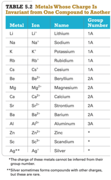

Week 6 - Day 2
Navigate using audio
Announcements
- Audio 0:00:20.125734
- Homework issue
- Electron configurations
- There are differences sometimes in the order of writing them.
- You get five or six freebies
- If you’ve checked the electron configuration and it says you’re wrong, it may be the way the website works.
- Electron configurations
- Audio 0:02:01.735946
- Real world is complicated
- He isn’t going to tell us anything that is wrong but everything we’re learning is a really watered-down, simplified version of the truth
Energetics of Ionic Bond Formation: Using NaCl as an Example
- Audio 0:05:03.029702
- Where we left off The ionization energy of the metal is endothermic.

- The electron affinity of the nonmetal is exothermic.
- Generally, the ionization energy of the metal is larger than the electron affinity of the nonmetal; therefore, the formation of the ionic compound should be endothermic.
- But the heat of formation of most ionic compounds is exothermic and generally large.


Crystal Lattice and Lattice Energy of NaCl
- Audio 0:05:58.951668
- Part of the energy formula in the previous slide does not add up because it does not account for the lattice shape of the compound
- Lattice energy
- The extra stability that accompanies the formation of the crystal lattice is measured as the lattice energy.
- Audio 0:07:54.475155
- It is the energy released when the solid crystal forms from separate ions in the gas state.
- Always exothermic
- Lattice energy is measured directly but is calculated from knowledge of other processes.
- It depends directly on the size of charges and inversely on distance between ions.
- (Coulomb’s law)
- Audio 0:09:53.359903
- The most stable lattice is a very difficult calculation
- The extra stability that accompanies the formation of the crystal lattice is measured as the lattice energy.
Ionic Bonding Model versus Reality
- Audio 0:10:12.809739
- implies that the positions of the ions in the crystal lattice are critical to the stability of the structure.
- predicts that moving ions out of position should therefore be difficult, and ionic solids should be hard.
- Ionic solids are relatively hard compared to most molecular solids.
- If you’ve ever touched a crystal, this is obvious
- Ionic solids are relatively hard compared to most molecular solids.
- implies that if the ions are displaced from their position in the crystal lattice, repulsive forces should occur.
- this predicts that the crystal will become unstable and break apart. Theory predicts that ionic solids will be brittle.
- If you strike a crystal with a hammer, it will shatter because it becomes unstable
- The same is not true for metals
- Ionic solids are brittle. When struck, they shatter.
- If you strike a crystal with a hammer, it will shatter because it becomes unstable
- this predicts that the crystal will become unstable and break apart. Theory predicts that ionic solids will be brittle.
- Audio 0:13:21.487007
- implies that, in the ionic solid, the ions are locked in position and cannot move around.
- predicts that ionic solids should not conduct electricity.
- Audio 0:12:23.638218
- To conduct electricity, a material must have charged particles that are able to flow through the material.
- Ionic solids do not conduct electricity.
- implies that, in the liquid state or when dissolved in water, the ions will have the ability to move around.
predicts that both a liquid ionic compound and an ionic compound dissolved in water should conduct electricity.
- Ionic compounds conduct electricity in the liquid state or when dissolved in water.
Conductivity of NaCl
- Audio 0:14:19.003024
- In NaCl(s), the ions are stuck in position and not able to move to the charged rods.
- In NaCl(aq), the ions are separated and are able to move to the charged rods.
Ionic Bonding and the Crystal Lattice
- Audio 0:14:34.266075
- The extra energy that is released comes from the formation of a structure in which every cation is surrounded by anions and vice versa.
- This structure is called a crystal lattice.
- The crystal lattice is held together by the electrostatic attraction of the cations for all the surrounding anions.
- Electrostatic attraction is a nondirectional force.
- Therefore, there is no ionic molecule.
- The chemical formula is an empirical formula, simply giving the ratio of ions based on charge balance.
- Therefore, there is no ionic molecule.
- Electrostatic attraction is a nondirectional force.
- The crystal lattice maximizes the attractions between cations and anions leading to the most stable arrangement
Ionic Compounds
- Audio 0:16:15.553827
- Ionic compounds are composed of cations (metals) and anions (nonmetals) bound together by ionic bonds.
- Examples of ionic compounds:
- NaBr, Al2(CO3)3, CaHPO4, and MgSO4
- Examples of ionic compounds:
- The basic unit of an ionic compound is the formula unit, the smallest, electrically neutral collection of ions.
- Example:
- The ionic compound table salt, with the formula unit NaCl, is composed of Na+ and Cl+ions in a one-to-one ratio.
- Example:
- Summarizing Ionic Compound Formulas
- Ionic compounds always contain positive and negative ions.
- In a chemical formula, the sum of the charges of the positive ions (cations) must equal the sum of the charges of the negative ions (anions).
- The formula of an ionic compound reflects the smallest whole-number ratio of ions.
Nomenclature: Naming Compounds
- Audio 0:18:01.496531
- Organic compounds: predominantly carbon Usually plus H, O, N, S
- Inorganic compounds: everything else
-
Ionic Compounds: Cation followed by anion +-ide ## Naming Ionic Compounds
- Audio 0:19:25.857435
- Ionic compounds can be categorized into two types, depending on the metal in the compound.
- The first type contains a metal whose charge is invariant from one compound to another.
- Whenever the metal in this first type of compound forms an ion, the ion always has the same charge.
- Audio 0:21:00.382017
- Metals with invariant charges
- 
- common nonmetal anions
Naming Binary Ionic Compounds of Type I Cations
- Audio 0:22:33.873986
- Binary compounds contain only two different elements. The names of binary ionic compounds take the following form:
- For example, the name for KCl consists of the name of the cation, potassium, followed by the base name of the anion, chlor, with the ending -ide.
- KCl is potassium chloride.
- We know potasium is +1, we know Cl is -1, so we don’t have to write it
- KCl is potassium chloride.
- The name for CaO consists of the name of the cation, calcium,
followed by the base name of the anion, ox, with the ending -ide.
- CaO is calcium oxide.
Chemical Nomenclature
- Audio 0:23:49.504979
- Ionic Compounds
- often a metal + nonmetal
- anion (nonmetal), add “ide” to element name
Clicker 1
- Write the formula for calcium nitride
- Ca_3N_2
Lewis Structure Model: Representing a Substance’s Valence Electrons
- Audio 0:26:31.209408
- The Lewis Model:
- Valence electrons are represented as dots.
- Valence electrons are represented as dots.
- Lewis electron-dot structures (Lewis structures) depict the structural formula with its valence electrons.
- Audio 0:27:52.445649
- Lewis structures focus on valence electrons because chemical bonding involves the transfer or sharing of valence electrons between two or more atoms.
Octet Rule: A Guideline for Molecule Formation
- Audio 0:28:08.406107
- When atoms bond, they tend to gain, lose, or share electrons to give a noble gas–like configuration.
- ns2np6
- Nonmetals: period 2 elements must obey the octet rule (i.e., eight valence electrons around each atom in the molecule).
- Exceptions to the octet rule: Expanded octets
- (Sometimes octet rule doesn’t work)
- Audio 0:29:09.248458
- They involve the nonmetal elements located in period 3 and below.
- Nonmetals (period 3 on down in the periodic table) follow the octet rule when they are not the center atom.
- The center atom is the atom in the molecule that the other elements individually bond (attach) to.
- When they are the center atom, they can accommodate more than eight electrons.
- Using empty valence d orbitals that are predicted by quantum theory
Multivalent Metals: Naming Type II Ionic Compounds
- Audio 0:30:05.304852
- The metals in this category tend to have multiple charges (i.e., multivalent cations):
- Their charge cannot be predicted as in the case of most representative elements and must be noted in their name.
- Transition and inner transition metals
- Iron (Fe) forms a 2+ cation in some of its compounds and a 3+ cation in others.
- FeSO4: Here iron is a +2 cation (Fe2+).
- Fe2(SO4)3: Here iron is a +3 cation (Fe3+).
- Iron (Fe) forms a 2+ cation in some of its compounds and a 3+ cation in others.
- Many of the p-block metals
- Not all p-block metals are multivalent.
- Some main-group metals, such as Pb, Tl, and Sn, form more than one type of cation.
Type II Cation
- Audio 0:31:26.941062
Naming Type II Binary Ionic Compounds— Example: CrBr3
- Audio 0:32:36.900613
- To name CrBr_3, cation + total anion charge = 0
- Cr charge + 3(Br+charge) = 0
- Since each Br has a –1 charge, then
- Cr charge + 3(–1) = 0
- Cr charge + (–3) = 0
- Cr = +3
- Hence, the cation Cr3+ is called chromium(III), and Br^- is called bromide.
- The name for CrBr3 is chromium(III) bromide.
Polyatomic Ions
- Audio 0:33:44.947274
Oxyanions
- Audio 0:34:09.654184
- Most polyatomic ions are oxyanions, anions containing oxygen and another element.
- Noticethatwhenaseriesofoxyanionscontainsdifferent numbers of oxygen atoms, the oxyanions are named according to the number of oxygen atoms in the ion.
- Iftherearetwoionsintheseries,
- the one with more oxygen atoms has the ending -ate; and +the one with fewer has the ending -ite.
- Forexample,
- NO3+is nitrate SO_4^2+ is sulfate
- NO2+is nitrite SO_3^2+ is sulfite
- If there are more than two ions in the series, then the prefixes hypo-, meaning less than, and per-,
meaning more than, are used.
Naming Ionic Compounds Containing Polyatomic Ions
- Audio 0:36:49.401712
- Ionic compounds that contain a polyatomic ion rather than a simple anion (e.g., Cl–) are named in the same manner as binary ionic compounds, except that the name of the polyatomic ion used.
- For example, NaNO2 is named according to
- its cation, Na+, sodium; and
- its polyatomic anion, NO2–, nitrite.
- Hence, NaNO2 is sodium nitrite.
- For example, NaNO2 is named according to
Common Polyatomic Ions
-
- You should memorize this
Chemical Nomenclature
- Audio 0:41:08.609726
- Ionic Compounds/Polyatomic Anion
- BaSO4 barium sulfate
- KMnO4 potassium permanganate Mg(OH)2 magnesium hydroxide
- KNO3 potassium nitrate
- (NH4)3PO4 ammonium phosphate
Clicker 2
- Copper(II) phosphate’s formula
- Cu_3(PO_4)2
Hydrated Ionic Compounds
- Audio 0:44:52.355986
- Hydrates are ionic compounds containing a specific number of water molecules associated with each formula unit.
- Some ionic compounds have multiple hydrates
Hydrates
- Common hydrate prefixes
- hemi = 1⁄2
- mono = 1
- di = 2
- tri=3
- tetra = 4
- penta = 5
- hexa = 6
- hepta = 7
- octa = 8
- Other common hydrated ionic compounds and their names are as follows:
- CaSO4 +1⁄2H2O is called calcium sulfate hemihydrate.
- BaCl2 +6H2O is called barium chloride hexahydrate.
- CuSO4 +6H2O is called copper sulfate hexahydrate.
Vocab
| Term | Definition |
|---|---|
| lattice energy | the extra stability that accompanies the formation of the crystal lattice |
| ionic solid properties | relatively hard and brittle and don’t conduct electricity |
| crystal lattice | structre in which every cation is surrounded by anions and vice versa |
| binary compounds | compounds containing only two different elements |
| formula unit | empirical formulla of any ionic compound which is the lowest whole number ratio of ions |
| oxyanions | anions containing oxygen and another element |
| acetate formula | C_2H_3O_2^- |
| carbonate | CO_3^2- |
| hydrogen carbonate | HCO_3^- |
| hydroxide | OH^- |
| nitrite | NO_2^- |
| chromate | CrO_4^2- |
| dichromate | Cr_2O_7^2- |
| phosphate | PO_4^3- |
| hydrogen phosphate | HPO_4^2- |
| dihydrogen phosphate | H_2PO_4^- |
| ammonium | NH_4^+ |
| hypochlorite | ClO^- |
| chlorite | ClO_2^- |
| chlorate | ClO_3^- |
| perchlorate | ClO_4^- |
| permanganate | MnO_4^- |
| sulfite | SO_3^2- |
| hydrogen sulfite | HSO_3^- |
| sulfate | SO_4^2- |
| hydrogen sulfate | HSO_4^- |
| cyanide | CN^- |
| peroxide | O_2^2- |
| hydrates | ionic compounds containing a specific number of water molecules associated with each formula unit |